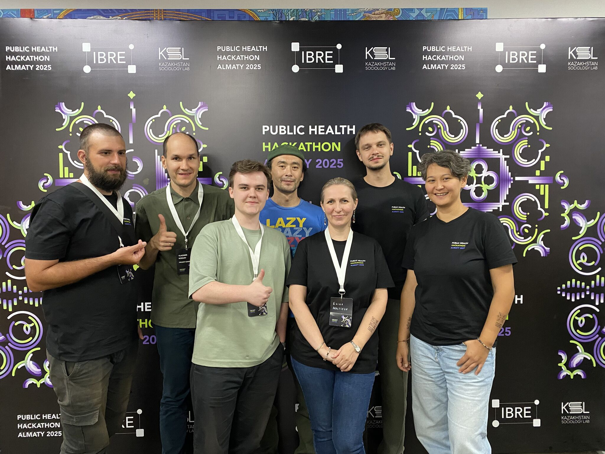

About the Project
This project is a hands-on space to study the health of Kazakhstan’s population using a monthly cross-sectional survey by NAC Analytica (2017–2021). Participants run exploratory data analysis and mini-studies in sociology of health / public health with no predefined question — encouraging creativity, independent inquiry, and teamwork guided by Vladimir Kozlov and Dmitry Serebrennikov.
What we built and learned:
- Regional dashboard: indicators by region with time curves and juxtaposition with local life expectancy.
- Perceived health: using difference-in-differences we separated the 2019 health-care reform effect from the pandemic. The sustained shift in perceived health aligns primarily with the reform; at the pandemic peak the QuantCovid coefficient shows a brief uptick in the long-run trend.
- News NLP: sentiment analysis of local media and its relationship to subjective health perceptions.
The work was carried out during Public Health Hackathon 2025 (Almaty) with IBRE and the Kazakhstan Sociology Lab.
Data: NAC Analytica (2017–2021)
Methods: EDA, DiD, NLP
Team
- Ilia Popov
- Grigory Gladkov
- Darkhan Medeuov
- Dmitry Serebrennikov
- Elina Maltseva
- Zhanna Berdygulova
- Vladimir Kozlov
